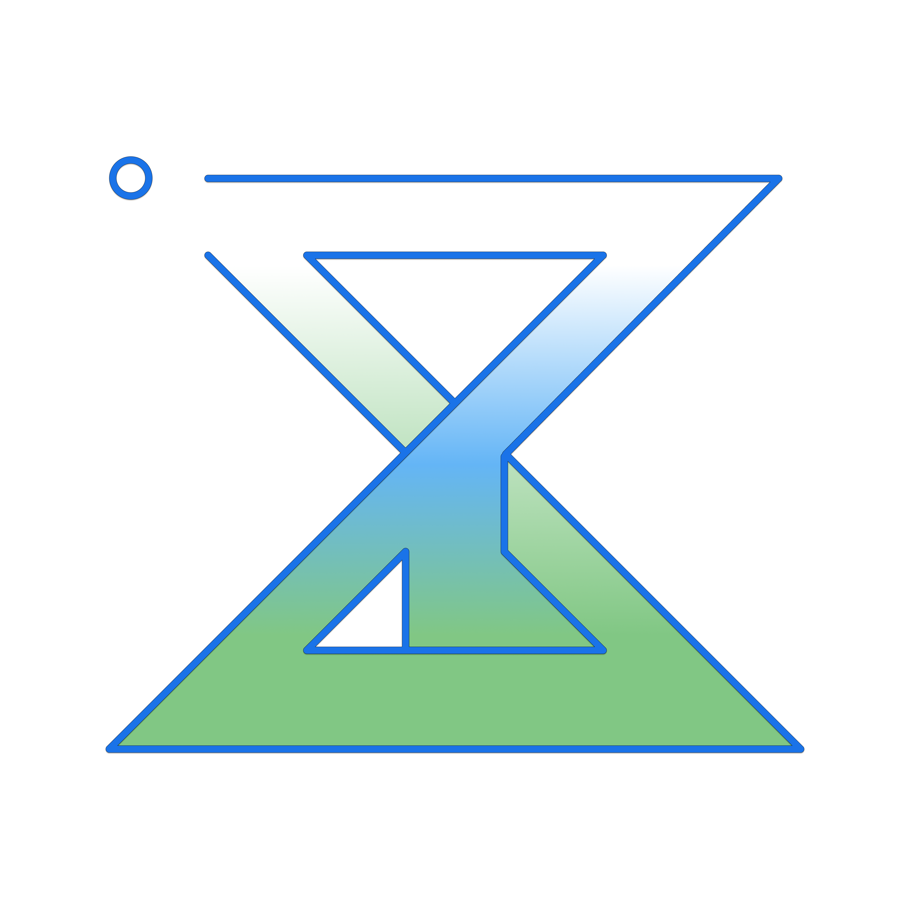

欢迎来到我的个人导航！
我是 Benincasamatch，正在学习网络开发。
我的 GitHub 主页，包含我的项目和代码。
通过 GitHub 与我联系。
个人项目总仓库，包含导航页、脚本、配置与自动化内容。
基于静态网页构建的个人入口站点，用来汇总常用链接和自建服务。
更多的代码作品与项目持续更新，欢迎访问我的 GitHub 主页。
使用 openlist 搭建的网盘。
使用 jellyfin 搭建的视频网站。
多种 LLM 兼容的 API 代理服务。
基于 UptimeRobot 的可用性监控，查看各项自建服务的在线状态。